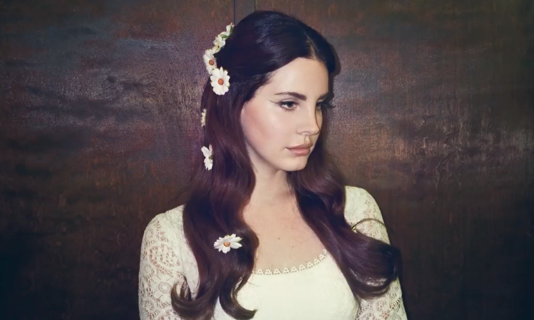

Early Career
At age eighteen Lana Del Rey moved back to New York City to pursue a degree in philosophy at Fordham University. While attending college she performed at small local NYC clubs under the name Lizzy Grant. After graduating from Fordham, she continued to write music and perform. In 2011, her career took off after her song “Video Games” went viral. This single landed her a record deal with Interscope Records, leading to her move to Los Angeles.
Lana's Life
Since Lana Del Rey’s album “Born to Die” released in 2012, she has produced eight other albums and toured around the world. She is now forty years old and has announced her tenth album set to come out in early 2026 titled Stove.
Learn more about Lana Del Rey Wikipedia page and Biography page
Albums
- Lana Del Rey AKA Lizzy Grant (2010)
- Born to Die (2012)
- Ultraviolence (2014)
- Honeymoon (2015)
- Lust for Life (2017)
- Norman F**king Rockwell (2019)
- Chemtrails over the Country Club (2020)
- Blue Banisters (2021)
- Did you know that there’s a tunnel under Ocean Blvd (2023)
Lana's Life Update
- Married Jeremy Dufrene (2024)
- Moving to Louisiana (2024)
- New Album Release Announcement (2025)
Gallery
